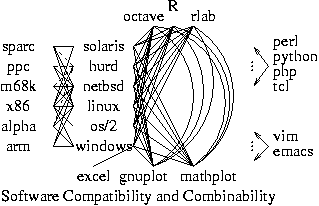
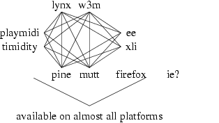

Aug 2001 重新整理
(另有 講稿摘要版 內容大致相同,
但有更多圖示。)
我很喜歡玩電腦, 也覺得學電腦是一件很愉快的事。 對於時下主流的電腦補習課程 (甚至是學校的某些電腦操作課程) 的教/學方式, 我有很不一樣的意見。 不論你是不是資訊科系, 如果你喜歡學活的, 長久有用的知識, 不喜歡死記/機械化地操作, 那麼這篇稿子也許可以獲得你的共鳴。 特別是習於解析/建構的理工科系同學, 習於分析文法/造複合句的外語同學系, 如果你採納我的意見, 所培養出來的 「資訊素養」 很可能會超過那些繳了許多電腦學費的朋友, 甚至超過某些只會拉選單的資訊科系學生。
經常聽到資訊相關科系的學生抱怨 "長江後浪推前浪, 前浪死在沙灘上": 大一時所學的軟體到了大四就快退流行了; 剛畢業的學弟妹比當完兵回來的學長更符合軟體公司的專長需求。 原因是軟體工具的汰舊換新太快了。 資訊人的「成就階梯」真的必須每兩三年重新歸零一次嗎?
筆者邀請大家想想看我們是如何學國文, 英文, 數學的。 有多少人可以 背 出一百萬個英文句子呢? 但是看過以下提示後, 有高中英文程度的讀者, 應該都知道如何 寫 出一百萬個英文句子:
四則運算用到多少符號, 又能解決多少類不同的問題? 出售 100 種不同食品的自動販賣機需要用幾個按鈕來操縱? 火車站的自動售票機有幾個按鈕, 又能印出多少種不同的票? 樂高積木有多少種元件, 又能組合出多少種不同的作品? 裝潢師的工具有限, 為什麼卻可以創造出那麼多種不同的室內景觀?
筆者在學習軟體時, 喜歡挑那些與其他軟體溝通良好, 有很通暢的資訊接駁管道 (姑且稱之為「高組合性」) 的軟體: 這套軟體是否可以在各種不同的軟硬體平臺使用? 是否可正確讀/寫公開檔案格式? 是否全力支援公開通信協定? 所以我兩年前學一套具有 5 個功能的軟體, 一年前再學一套具有 5 個功能的軟體, 今年又學一套具有 5 個功能的軟體, 最後可以解決的問題不是 15 個, 而是 125 個。 另一方面, 有些軟體強調的是花俏, 操作簡單, 多功能聚集於一身, 但卻忽略甚或 刻意阻絕 與其他軟體接駁資訊的管道 -- 我們姑且稱之為「低組合性」的軟體。 我那些學習低組合性軟體的同儕, 或許一開始很快就會覺得有成就感; 但是經年累月下來, 我解決問題的能力卻是隨時間成指數曲線成長, 最後遠遠超過他們! 當然上述情況有點理想化過頭; 但是讀者應該可以了解筆者這個誇張的比喻所要強調的重點: 學習組合軟體, 需要記的東西少; 可以用的場合多。
學習高組合性軟體還有另外一個優點。 資訊科技進步迅速, 而資訊市場更是變化驚人, 我們很難預測那些軟硬體未來會有較佳的就業市場。 學一套多功能聚集於一身但與他人溝通不良的「萬能」軟體, 就像是把所有的雞蛋放在同一個籃子裡一樣危險。 反之, 學習一群組合性高的軟體, 當中如果有元件退流行了, 我們只需要重新學習一個元件就好了, 因為這個新元件可以與其他沒有變動的舊元件組合使用。 我們對於環境變化的適應力會強很多。 家庭劇院當中的 LD 要升級成 VCD, 需要把喇叭和電視一起換掉嗎? 舊電燈想改用省電燈泡, 需要把燈體一起換掉嗎? 有人說學 Linux 的人都是高手, 所以把他們丟到 MS Windows 的環境下他們還是 活得下去; 反過來就不一定了。 我認為學 Linux 的人未必真的有多厲害, 但他們習慣選用跨平臺, 高組合性的軟體, 適應力自然比只習慣 Wintel/Office/VB 文化的人來得強。 如果將來出現一個更高強的新作業系統來取代兩者, 猜猜看那一個族群的人會先被淘汰? 文書處理, 程式語言, 資料庫..。 亦是如此。 學習組合軟體, 比較不怕資訊科技快速變化。
附帶而來的好處, 就是 學習組合軟體, 知識的壽命長, 經驗可以累積。。


能夠拿來與其他知識組合運用的知識, 才是投資報酬率高, 生命週期長的知識。 眼光放遠, 慎選所學軟體, 培養組合能力, 讓你的新知識與舊知識發揮相乘的效果, 讓生產力曲線成指數成長! (感謝 GNU 文件的啟發, 本文觀念來自 info -f textutils "Opening the software toolbox" 一節; 也請參考我的 linux 講義當中 「組合的力量」 當中的具體操作實例.)
把組合的觀念用在個人的知識, 我們會將自己的舊知識盡量拿出來重複使用; 同樣的觀念用在人類的集體知識, 我們應該盡量使用既有的程式來解決我們的問題, 也就是要 "站在前人的肩膀上", 而不要一直 "重新發明輪子", 甚或像某些軟體公司一樣, 老是 "踩在前人的腳趾頭上"。
在 著手寫程式 之前, 你可曾用心地從下列資源當中 尋找可用的程式, 來減輕你的工作份量?
而且所謂 "可用的程式" 可能遠比我們想像的更要無所不在。 很多時候限制一個軟體使用範圍的, 可能不是程式本身, 而是使用者的想像力與對該軟體的了解。 C 的標準程式庫當中既已提供了 qsort, 實在不需要再自己重寫排序程式; 眾多應用程式都支援 regular expression, 有很多場合實在不需要再用滑鼠辛苦地重複剪貼工作。 尤其像是 perl 這類 scripting language, 乍看之下似乎與我們要解決的問題無關, 但事實上卻經常是最簡單的 "可用程式"。 例如想要分析一天當中, 每個小時上我們網站的人次, 可以下:
perl -ne 'print "$1\n" if /:(\d+):/' /var/log/httpd/access_log > x
sort x | uniq -c | perl -pale '$_=join " ", reverse @F' > y
然後進入 gnuplot 下
set data style lines
plot "y"
就完成了。 究竟多花一些時間寫程式比較值得呢? 還是多花一些時間學用程式比較值得呢? 學寫完整的程式容易呢? 還是學用程式容易呢? (註: 嚴格來說應該只計算讀取成功的部分。 上例中比對字串處應修改如下: ..。 if /:(\d+):.*"(GET|POST).*?"\s+200\s/ ..。 但再怎麼改, 這個 "命令" 的長度還是比相同功能的 java 或 c 程式短很多.)
有人說我們一般人的大腦只使用了十分之一不到; 隨著軟體越來越多, 越來越複雜, 我們對既有軟體的使用程度可能遠在這個數字之下, 甚至不知道找了好久的功能其實就在自己每天隨身攜帶的 CD 當中, 甚至就在自己天天使用的某個軟體之中! (我自己的切身經驗啦 ...) 換句話說, 我們這個社會真正最缺乏的其實並不是專門製作 "全功能應用程式" 設計師, 而是懂得把既有的數個應用程式適當設定, 重新組合, 完成連這些程式作者都沒想像過的工作, 這種會思考的使用者。
目前有許多企業僱主的思考方式依舊是: "花錢買軟體的使用權" 而不是 "花錢僱人幫我善用或小幅修改既有軟體", 所以這種人才的就業市場或許還不是很成熟。 告訴這些僱主 "擁有得多, 不如使用得巧" 正是我未來的工作重點之一。 不論社會大眾何時覺醒, 我們資訊從業人員都應該把眼光放遠, 及早開始做長遠的學習投資, 用有效率的學習方式, 學習可以活用組合的知識。 希望有一天, 社會大眾終於會知道: 僱用一位 會思考/選擇/組合既有程式的使用者, 比買一套具有漂亮使用者介面的 "全功能應用程式" 更能幫助自己解決切身獨特的問題; 希望有一天, 社會大眾終於會知道: 身邊有一位 會思考/選擇/組合既有知識的讀書人, 比擁有一套印刷精美的 "宇宙真理全集" 更能幫助自己解決切身獨特的問題。
當然筆者並非反對寫程式, 只是說寫程式之前要三思 (然後認真找過)。 什麼時候該寫程式呢?
至於如果寫程式的動機是販售程式使用權, 那恐怕就要三思了。 哺乳動物時代來臨之後, 地球上還是有爬蟲類; 不過那畢竟是少數。 在自由軟體時代來臨之後, 或許還是會有軟體公司能夠持續以版權私有軟體方式生存, 但恐怕也是少數。
在 Windows 下, 遇到程式出問題時怎麼辦? 「按 OK」 「重新開機」 「重灌應用軟體」 「重灌作業系統」 這些是最常聽到的答案。
這也是令你永遠受制於電腦, 難有進步的答案。
高手與常人的第一個差別在於 "偵探小說" (注意線索) 的學習法 vs 盲目的 "嘗試錯誤" 學習法。 對於自由軟體豐富的錯誤訊息不但不要抱著害怕的態度, 更要把它當成改正下次行為的珍貴線索。 來自 MS Windows 世界的人經常忽略這些非常重要的學習資訊。 這可以理解: 因為 Windows 和上面的許多 proprietary software 在印錯誤訊息時必須非常小心, 不要把過錯攬到自己身上; 而 Windows 的使用者在習於看到沒有意義的錯誤訊息 ("請與程式設計師聯絡" -- "可是我到那裡去找程式設計師的電話號碼啊? 而且, 就算我查得到...他會理大補帖的使用者嗎?") 之後, 便很自然地養成了忽略錯誤訊息的習慣。 但 Linux 和其上的自由軟體則大不相同, 錯誤訊息的目的在於幫助使用者找出問題所在, 那怕是必須承認程式自己的極限或錯誤也無所謂。
想變成電腦高手, 最重要的就是養成注意錯誤訊息的習慣,
要根據錯誤訊息來找出解決方案。 錯誤訊息可以拿來當做關鍵字,
到文件目錄底下搜尋: grep -i '...' `find /usr/share/doc/... -type
f` 也可以拿來上 google 搜尋。
對於 server 類的程式, 往往無法直接看到錯誤訊息, 因此 log 檔也非常重要。
盡量使用有特色的關鍵字: 例如要找網頁製作軟體, 用 html authoring 可能會比 write web page 的效果要好。
如果真的找不到比較有特色的關鍵字, 把很普通, 但卻很少一起出現的字或觀念放在一起, 也有類似的效果。
想要找同一類東西的列表, 比較, 除了用 comparison 這個字之外, 還有一個方法就是將你要的列表裡面最可能會出現的東西並列搜尋, 例如想知道有那些合法免費的網頁製作軟體可用, 可以用 mozilla bluefish 搜尋。